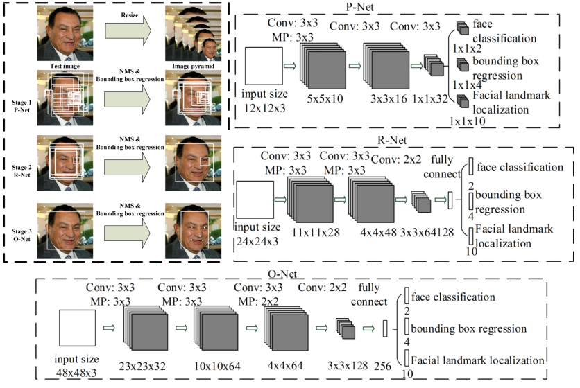
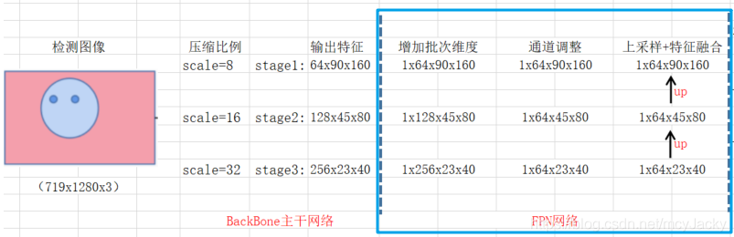

人脸方向论文解读
人脸方向---START
MTCNN(16/04)¶

- P-Net主要用来生成一些候选框（bounding box）。在训练的时候该网络的顶部有
3条支路用来分别做人脸分类、人脸框的回归和人脸关键点定位；在测试的时候这一步的输出只有N个bounding box的4个坐标信息和score，当然这4个坐标信息已经用回归支路的输出进行修正了，score可以看做是分类的输出（是人脸的概率），具体可以看代码。 - **R-Net主要用来去除大量的非人脸框。**这一步的输入是前面
P-Net生成的bounding box，每个bounding box的大小都是24*24，可以通过resize操作得到。同样在测试的时候这一步的输出只有M个bounding box的4个坐标信息和score，4个坐标信息也用回归支路的输出进行修正了 - O-Net和R-Net有点像，只不过这一步还增加了landmark位置的回归。输入大小调整为
48*48，输出包含P个bounding box的4个坐标信息、score和关键点信息。
Loss
- 分类:
交叉熵损失 bounding box回归:L2损失landmark回归:L2损失
在P-Net和R-Net中，关键点的损失权重（α）要小于O-Net部分，这是因为前面2个stage重点在于过滤掉非人脸的bbox。β存在的意义是比如非人脸输入，就只需要计算分类损失，而不需要计算回归和关键点的损失。
Retinaface(19/05)¶
论文|代码|博客:可以检测人脸框和5个人脸关键点(贡献:widerFace中5个关键点手动标注)。
- 注意:这里测试是固定尺寸
1600单尺度val测试集结果
网络结构

主干网络和FPN层

SSH(Single Stage Headless)
SSH(类似RPN操作)：通过简单的叠层卷积合并上下文信息(一般在two-stage 的目标检测模型当中，都是通过增大候选框的尺寸大小以合并得到更多的上下文信息)，速度更快，同时增加感受野。SSH使用并行的三个卷积：

- 第一个是
3x3卷积 - 第二个是用
2个3x3卷积代替5x5卷积 - 第三个是用
3次3x3卷积代替7x7卷积
分类、预测框、关键点提取
ClassHead是提取先验框是否包含人脸BoxHead是先验位置检测，anchor框的生成是在这三个特征图上生成的，小特征图(scale=32)产生2个大anchor框(方形框1:1)，中等特征图(scale=16)产生2个中等anchor框(方形框1:1)，大特征图(scale=8)产生2个小anchor框(方形框1:1)。- 困难样例挖掘(hard negative mining)：
iou_thresh>0.5是正负样本的阈值，但是negative >> positive，结果会向负样本靠拢。保证正：负大约为1:3，正样本固定，首次负样本随机选取训练网络，，再用训练好的网络去预测负样本集中剩余的负样本，选择其中得分最高topk(hard negative)作为负样本集中重新训练，结果会越来越好. LandmarkHead是人脸关键点位置检测。

decode(解码进行预测结果修正)
上一步的预测我们获得的是三个有效的特征层，我们需要对**预测框和人脸关键点检测**进行位置调整。根据encode的公式可以反推出decode解码公式，如下图所示:

# 对先验框进行调整，获得中心预测框
def decode(loc, priors, variances):
# @loc:location predictions for loc layers，[37840, 4]
# @priors：先验框 [37840, 4]
# @variances:方差[0.1, 0.2]
boxes = torch.cat((priors[:, :2] + loc[:, :2] * variances[0] * priors[:, 2:], #中心调整按公式
priors[:, 2:] * torch.exp(variances[1] * loc[:, 2:])), dim=1) #长宽调整按公式
# 转换坐标为左上角和右下角
boxes[:, :2] -= boxes[:, 2:] / 2
boxes[:, 2:] += boxes[:, :2]
return boxes
# 对先验框进行调整，获得人脸关键点
def decode_landm(pre, priors, variances):
# @pre: [37840, 10]
landms = torch.cat((priors[:, :2] + priors[:, 2:] * variances[0] * pre[:, :2],
priors[:, :2] + priors[:, 2:] * variances[0] * pre[:, 2:4],
priors[:, :2] + priors[:, 2:] * variances[0] * pre[:, 4:6],
priors[:, :2] + priors[:, 2:] * variances[0] * pre[:, 6:8],
priors[:, :2] + priors[:, 2:] * variances[0] * pre[:, 8:10],
), dim=1)
return landms
Multi-task Loss
结果展示
FaceBoxes(17/08)¶
该模型结构基于ssd进行修改。原始ssd有6个分支做预测，这里只采用了3个分支做预测。所有Anchor的长宽比例都是改为1:1
RDCL(快速消融卷积层):将图像尺寸快速的下降下去，减少网络的通道数，减少信息损失，保证实时
-
CReLU的两个作用: -
为了使加速模型，模型浅层使用大卷积核和大步长可以迅速降低图像尺寸，如果再用小的输出通道那么特征提取就不丰富，使用
CReLU可以使输出通道加倍且速度和精度几乎无损失 CReLU论文中提出，网络在浅层的时候卷积更倾向于同时捕获正负响应的信息，如果浅层使用ReLU的话会抹掉负响应，会造成卷积核存在冗余，所以使用CReLU效果更好，也可以减少卷积和数量。
MSCL(多尺度卷积层)

Inception1/2/3用来丰富感受野(Receptive Field)，为什么Inception3有3个特征图？因为Inception网络是并联结构，1x1卷积分支除外，有3个特征图。
-
一个特征图上预测的框映射到原图上的间隔与该层的感受野相同。
-
比如
Conv4-2的感受野是128,表示输入图片上每隔128个像素点就会有一个512x512尺寸的框
Anchor稠密化
和ssd一样，不同特征图设置不同尺寸Anchor，但是对于目标拥挤的情况(人脸稠密很常见)，在底层设置的小Anchor显得非常稀疏，所以需要做一个稠密化工作:具体就是在每个感受野的中心，也就是SSD中Anchor的中心对其进行偏移。根据Anchor的密度大小进行2,3,4倍的稠密化。Anchor的密度计算公式:
A_scale:anchor的尺度，默认为:32，64，128，256，512A_interval：anchor的间隔，默认为32、32、32、64、128A_density：计算可得:1,2,4,4,4，可以看到32 x 32和64 x 64的框过于稀疏，所以我们进行扩增密度，32x32需要扩增4倍，64x64需要扩增2倍。
损失函数
- 分类损失:交叉熵损失
softmax loss做2 - 框回归损失:
Smooth L1 Loss
Libfacedetection¶
Ultra(超级)-Light-Fast-Generic(通用)-Face-Detector-1MB
该模型结构基于ssd进行修改。原始ssd有6个分支做预测，这里只采用了4个分支做预测。每一个分支的基础anchor分别为3个，2个，2个，3个。min_boxes = [[10, 16, 24], [32, 48], [64, 96], [128, 192, 256]]
- 该部分主要是测试模型在中小分辨率下的测试集效果
DBFace升级(1.3M):对戴口罩数据也友好¶
网络结构
Backbone选用MobileNetV3增加了SE模块和h-swish激活函数模块，选用CenterNet结构(对小目标友好，具有后处理简洁高效等特点)做检测。相对于v1的MobileNetV2(7M)效果好，速度快。
任务头设计:SSH的DetectModule和ContextModule
对于上采样设计，我们采用Upsample+Conv+Act的方式，避免使用反卷积造成可能的锯齿问题。
Loss定义：
- 热力图(HeatMap)损失：Focal loss
-
这里γ取2，y=1时，α为正样本的权重，参照CenterNet，定义为目标周围半径处
3*3范围为1，其他为0，目的是加强正样本的训练权重。y=0时，α为(1 - gt)4，此时GT是一个基于目标计算的椭圆高斯图，参照TTFNet (Training-Time-Friendly Network for Real-Time Object Detection)。 -
位置坐标偏移量损失:GIoU Loss
-
人脸关键点
Landmark回归loss:WingLoss -
由于
SmoothL1 Loss对于较大误差时比较敏感，但是对中小误差则比较不敏感，而导致关键点无法得到精细结果，因此考虑加重对中小误差的关注
- 这里感觉用归一化后的方式效果会更好
数据增广
模型主要使用了random filp、random scaling、color jittering、randomly crop square patch、image compress等图像变换方式。